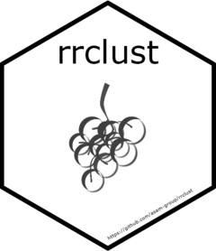

Splitting the continuous from the categorical data
Source:R/mod_catcontvar.R
mod_catcontvar.RdSplits the continuous from the categorical data, in order to use a clustering method.
Arguments
- RR_OASI
A data frame containing all OASI data, whose variables are:
year: Year of the pension register extract.age: Age of the individual.age_retire: Effective retirement age.sex: Sex, female if female, 0 if male.nat: Nationality, foreign if 1, 0 if Swiss.resid: Residence, foreign if 1, 0 if Swiss.benef_type1: Old-age type of benefit if 1, 0 otherwise (dummy).benef_type2: Widow type of benefit if 1, 0 otherwise (dummy).benef_type3: Father's orphan type of benefit if 1, 0 otherwise (dummy).benef_type4: Mother's orphan type of benefit if 1, 0 otherwise (dummy).benef_type5: Twice orphan type of benefit if 1, 0 otherwise (dummy).benef_type6: Spouse's compl. type of benefit if 1, 0 otherwise (dummy).benef_type7: Father's child rent type of benefit if 1, 0 otherwise (dummy).benef_type8: Mother's child rent type of benefit if 1, 0 otherwise (dummy).benef_type: Types of benefits type of benefit (categorical).marital_stat1: Divorced marital status if 1, 0 otherwise (dummy).marital_stat2: Single as reference category marital status if 1, 0 otherwise (dummy).marital_stat3: Married marital status if 1, 0 otherwise (dummy).marital_stat4: Widowed marital status if 1, 0 otherwise (dummy).marital_stat: Marital status.splitting: If 1, splitting of the revenues, 0 otherwise.capping: If 1, the pension is capped, 0 otherwise.contrib_m_ind: Total number of OASI contribution months per individual.contrib_y_ageclass: Total number of contribution years per age group.bonus_m_edu: Number of months paid with a bonus for educative tasks.bonus_m_assist: Number of months paid with a bonus for assistance/care tasks.
- RR_OASI_TS
Training set containing x% of the data.
- RR_OASI_VS
Validation set containing (100 - x)% of the data.
- PARAM_GLOBAL
Data frame containing the parameters. We use the following:
categ_var: Set of chosen categorical variables.cont_var: Set of chosen continuous variables.
- list
List of input data frames.
Value
a tidylist containing the following tidy data frames:
CATEG_DF: Contains only categorical variables (factors).CONT_DF: Contains only continuous variables (numeric).CATEG_DF_TS: Contains only categorical variables (factors), training set.CONT_DF_TS: Contains only continuous variables (numeric), training set.CATEG_DF_VS: Contains only categorical variables (factors), validation set.CONT_DF_VS: Contains only continuous variables (numeric), validation set.
Examples
#' @examples
#' # create random data
#' IND_YEARLY_RR <- structure(
#' list(
#' alt = c(
#' 46L, 38L, 14L, 75L, 30L
#' ),
#' sex = c(
#' "f", "f", "f", "f", "m"
#' ),
#' nat = c(
#' "ch", "ch", "ch", "au", "ch"
#' ),
#' dom = c(
#' "ch", "au", "ch", "ch", "ch"
#' ),
#' gpr = c(
#' "rveuve", "renfant_pere_simple",
#' "rorphelin_pere_simple", "rvieillesse_simple", "renfant_pere_simple"
#' ),
#' zv = c(
#' "geschieden", "geschieden", "ledig", "ledig", "geschieden"
#' ),
#' csplit = c(NA, NA, NA, 0L, NA),
#' cplaf = c(
#' NA, NA, NA, 0L,
#' NA
#' ), jahr = c(2023L, 2023L, 2023L, 2023L, 2023L),
#' ram = c(
#' 879274L, 2988594L, 5111279L, 8900743L, 1322875L
#' ),
#' monatliche_rente = c(
#' 3399L, 2298L, 541L, 2496L, 3894L
#' ),
#' age_ret = c(
#' NA, NA, NA, 68L, NA
#' ),
#' eprc = c(
#' 0.0526315789473684, 0.0294117647058824, 0.024390243902439, 0.1, 0.125
#' ),
#' lcot = c(
#' 7L, 494L, 209L, 128L, 323L
#' ),
#' lcotg = c(
#' 38L,
#' 22L, 13L, 20L, 44L
#' ),
#' lbedu = c(
#' NA, NA, NA, 394L, NA
#' ),
#' lbass = c(
#' NA, NA, NA, 333L, NA
#' )
#' ),
#' class = c("tbl_df", "tbl", "data.frame"),
#' row.names = c(NA, -5L)
#' )
#' # create RR_OASI
#' tl_mod_prepa_rr <- mod_prepa_rr(IND_YEARLY_RR = IND_YEARLY_RR)
#'
#' # create PARAM_GLOBAL
#' PARAM_GLOBAL_TIDY <- structure(
#' list(
#' key = c(
#' "method_name",
#' "path_data",
#' "description",
#' "pct_sample_ts",
#' "categ_var",
#' "cont_var"
#' ),
#' value = c(
#' "kamila",
#' "",
#' "Kamila method",
#' "80",
#' "sex, nat, resid, benef_type1, benef_type2, benef_type3, benef_type4,
#' benef_type5,
#' benef_type6, benef_type7, benef_type8, benef_type, marital_stat1,
#' marital_stat2,
#' marital_stat3, marital_stat4, marital_stat, splitting, capping",
#' "year, aadr, monthly_pension, age, age_retire, scale, contrib_m_ind,
#' contrib_y_ageclass, bonus_m_edu, bonus_m_assist"
#' )
#' ),
#' class = c("tbl_df", "tbl", "data.frame"),
#' row.names = c(
#' NA,
#' -6L
#' )
#' )
#'
#' # spread PARAM_GLOBAL_TIB
#' read_param_tib <- function(tib) {
#' z1 <- tidyr::pivot_wider(tib, names_from = key, values_from = value)
#' if (identical(dim(z1), c(0L, 0L))) {
#' return(z1)
#' }
#' select(z1, one_of(tib[["key"]]))
#' }
#'
#' PARAM_GLOBAL <- read_param_tib(PARAM_GLOBAL_TIDY) |>
#' mutate(pct_sample_ts = as.numeric(pct_sample_ts))
#'
#' # Splitting the data into a Training and a Validation sets
#' tl_mod_tsvs <- mod_tsvs(
#' RR_OASI = tl_mod_prepa_rr$RR_OASI,
#' PARAM_GLOBAL = PARAM_GLOBAL
#' )
#'
#' mod_catcontvar(
#' RR_OASI = tl_mod_prepa_rr$RR_OASI,
#' RR_OASI_TS = tl_mod_tsvs$RR_OASI_TS,
#' RR_OASI_VS = tl_mod_tsvs$RR_OASI_VS,
#' PARAM_GLOBAL = PARAM_GLOBAL
#' )